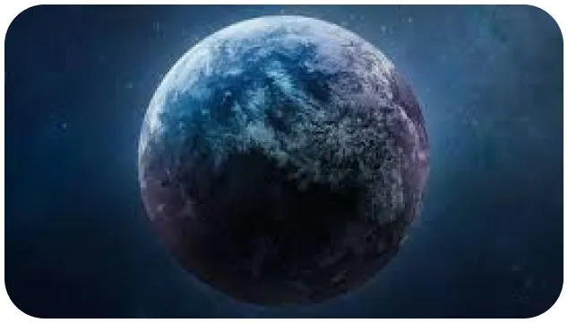

X'plore
Nos planètes voisines
Sommes-nous seulS dans l’univers ?
Notre système solaire n’est pas le seul de l’univers. Cette théorie n’est pas nouvelle. Des scientifiques avait déjà émis la théorie de planètes semblables à la nôtre, ailleurs dans l’univers, bien avant les sagas de science-fiction. La première découverte d’une exoplanète date de 1995, baptisé : 51 PEGASIS B. Notre univers ne compte pas moins d’un billion d’exoplanète, dispersées aux quatre coins du cosmos, représentant une infinité de galaxie.
Les conditions d’une planète habitable
Pour être habitable, une planète doit relever certains critères :
- Elle doit être rocheuse.
- Posséder de l’eau liquide pour faciliter les rencontres entre les molécules.
- Sa masse proche de celle de la terre. Trop massive, elle attirerait les gaz alentour, la transformant en planète gazeuse. A l’inverse, elle ne serait pas suffisante grande pour retenir une atmosphère.
- La distance entre elle et son étoile. Trop proche la température pourrait monter au-delà de 426°C. mais éloignée de son soleil, la température peut descendre jusqu’à -140.
- Enfin, elle doit graviter autour d’une étoile de taille moyenne. Les grosses étoiles n’étant pas envisageable, les étoiles naines ne sont pas adéquatées non plus en raison d’une émission de rayon X élevé.
La saga OUTSPHERE

abonnez - vous gratuitement pour découvrir nos nouveaux articles
X'plore
Pour aller plus loin :
Rejoind une communauté de passionné.
#xplore #space #decouverte #technology
Retrouve X’plore sur YouTube et découvre nos meilleurs sujets.
Réagit à toute notre actualité